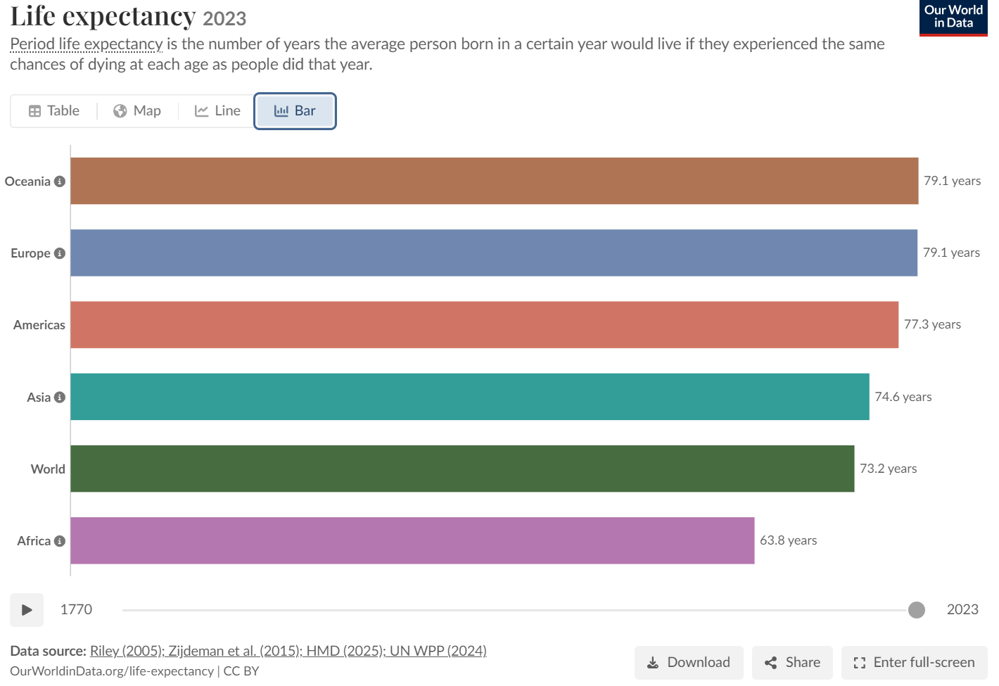

Visualization Critique & Redesign
STATS 401 Individual Project · Coffee production by world region, 1961–2024 · Our World in Data (FAO, CC BY 4.0)
1 · The Original Visualization
Source: Our World in Data — "Coffee production by world region" (stacked area chart, data: FAO 2025).
Data: annual production of green (unroasted) coffee beans in tonnes, 1961–2024, for six world regions — Africa, Asia, Europe, North America, Oceania, South America.

Intended message: world coffee output has roughly tripled; South America dominates; production has shifted from Africa toward Asia (Vietnam’s rise). Audience: general public and students. Tasks: compare regions over time, spot trends, turning points, and weather shocks such as frost dips.
Strengths
- Stacking makes the total easy to read — the top edge sits on a common baseline, so overall growth (4M → 11M t) is unmistakable.
- Honest, clean design: y-axis starts at zero, light gridlines, distinguishable colors, clear source and unit.
- Interactive on the source site: hover shows exact values; clicking a region highlights its area (with everything underneath) and pops up a value box; a play slider animates 1961→2024.
Weaknesses
- Only the bottom layer (South America) has a flat baseline — comparing Asia vs. Africa means judging floating band thickness, a perceptually inaccurate task.
- In the default view, six colors must be decoded through the side legend (click-to-highlight helps only if you know what to click, and is lost in static screenshots); thin top layers (Oceania, Europe) are nearly indistinguishable.
- Stacked jaggedness hides which region caused each dip; small regions are squashed at the top; playing the animation makes cross-time comparison harder (viewers must remember previous frames).
2 · My Redesign — Small Multiples (D3.js v7)
One line panel per region on a shared y-axis: every region gets a flat baseline, every comparison uses position on a common scale, and panels are directly labeled — no legend lookup. Hover for exact values, click chips to filter, switch the y-scale to reveal small regions.
Note: years with zero reported production (Europe, 1972–1986) are omitted. Log scale floors at 1 t.
3 · What Improved
- Asia vs. Africa crossover (~2000) — invisible in floating bands, obvious as two separate baselined lines.
- Shocks — South America’s frost-year dips now visible in its own panel instead of blurred into the stack.
- Small regions — Oceania and Europe readable via the log toggle; exact values one hover away.
Trade-offs: the total is no longer shown (the original remains linked above); small multiples take more vertical space.
Data & references: FAO (2025) via Our World in Data, CC BY 4.0 ·
CSV: coffee-production-by-region.csv (local copy in ../data/) ·
Full critique: report.md